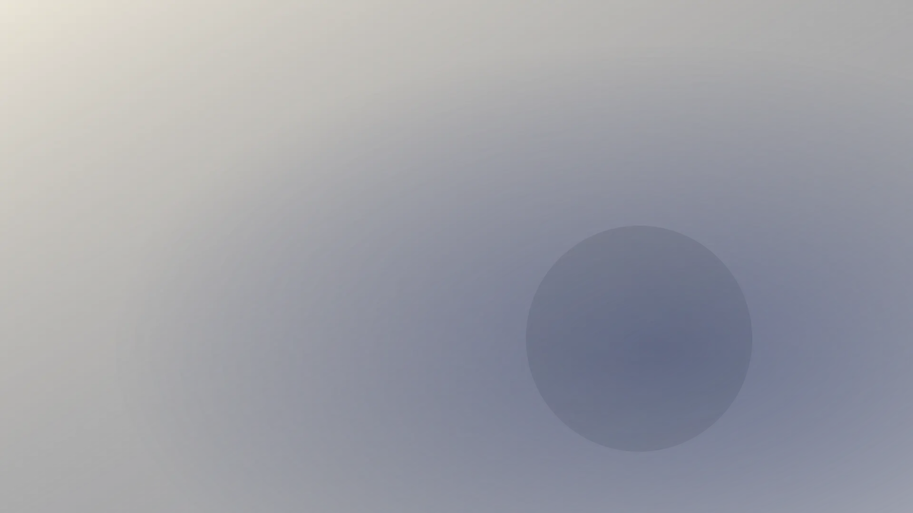
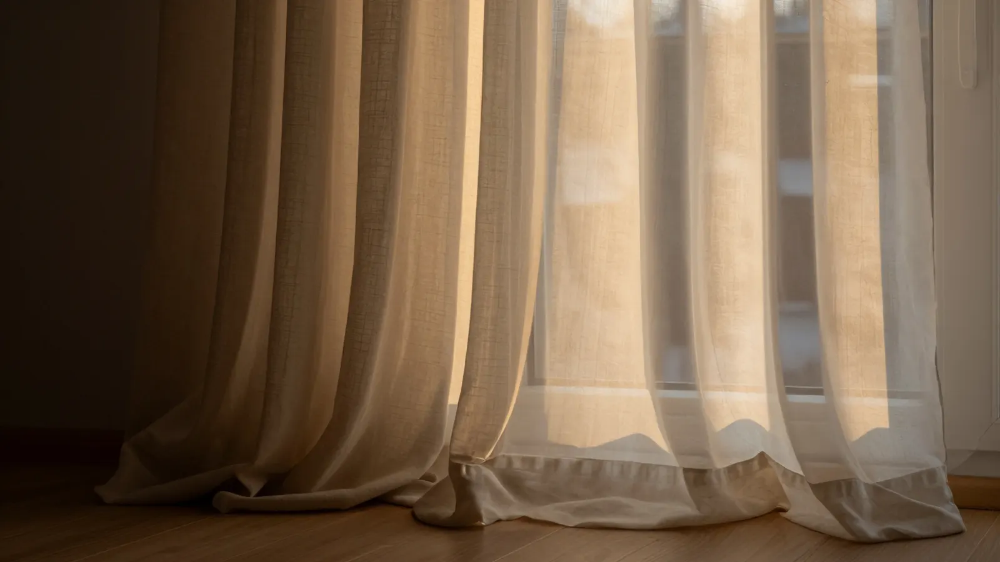
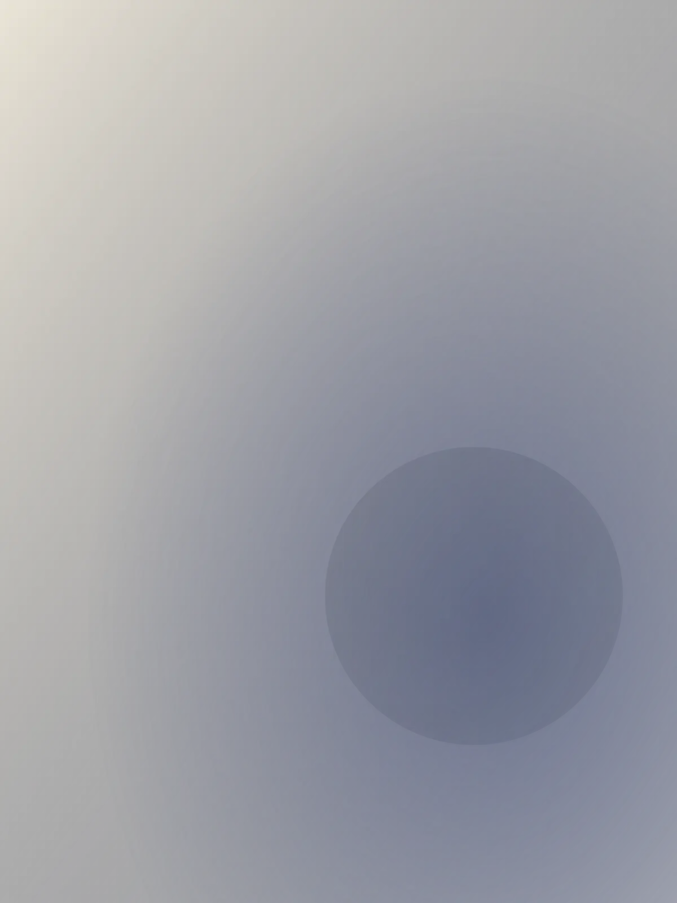
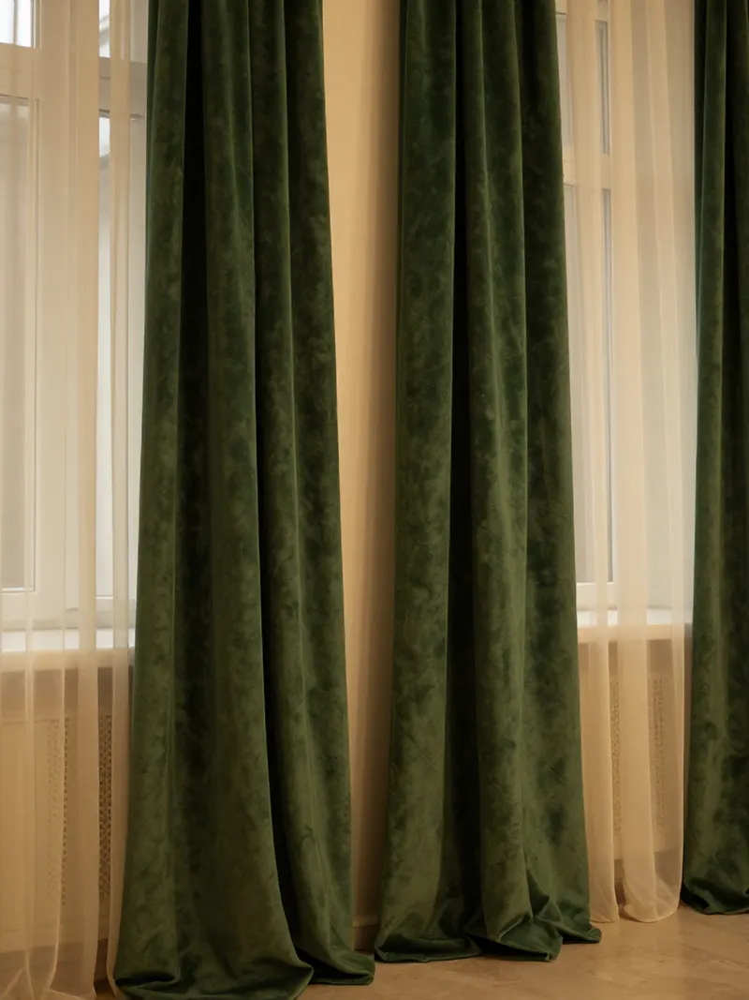
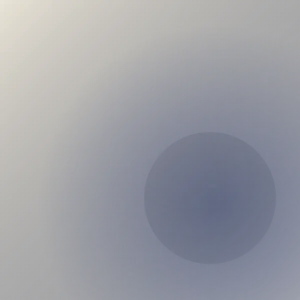

Оставили заявку
Через форму, в мессенджер или по телефону. Договариваемся о дне и времени замера, удобном вам, в Москве или области.

Замер и образцы тканей у вас дома, пошив по размерам окна к оговорённой дате. Цена после замера не растёт.

Цвет и плотность на фото в каталоге не совпадают с тем, что висит у вас вечером при лампе.
Сначала назвали ткань, потом добавились пошив, тесьма, карниз и монтаж. Итог узнаёте, когда шторы уже сшиты.
Шторы короче окна или лежат на полу лужей: длину взяли «примерно», а не от карниза до пола.
Образцы тканей привозим на замер – выбираете у своего окна. Размеры снимаем от карниза до пола и записываем в бланк замера. Цена – в договоре после замера: ткань, пошив, тесьма и монтаж отдельными строками, дальше не растёт.
Через форму, в мессенджер или по телефону. Договариваемся о дне и времени замера, удобном вам, в Москве или области.
Замерщик приезжает с образцами. Снимает размеры окна и карниза, ткань выбираете у своего окна – так, как она будет висеть.
Ткань, пошив, тесьма и монтаж – отдельными строками. После подписания цена не растёт, а срок пошива стоит датой.
Шторы отпаривают и вешают на карниз, длину проверяют на месте. Принимаете работу у своего окна.
Точная цена зависит от размеров окна и выбранной ткани – её фиксируем в договоре после замера. Ориентир по цене назовём заранее, по фото окна.

Четыре условия, которые записываем в бланк замера и договор.

Размеры из бланка замера идут прямо в раскрой, без пересказов. Кто замерял и кто шил, видно в договоре, поэтому вопросы по заказу решает тот, кто его знает.
Ниже – окна, для которых мы шили шторы: портьеры, римские, блэкаут, тюль.


Оставьте имя и телефон – перезвоним и договоримся о дне замера. Москва и Московская область.